Lab7_Behavioral Modeling and Timing Constraints
Introduction
Behavioral modeling was introduced in Lab 1 as one of three widely used modeling styles. Additional capabilities concerning testbenches were further introduced in Lab 4. However, more constructs are available in this modeling style that are particularly useful for complex sequential digital circuit design. Sequential circuits require clocking, and with clocking, there is always a frequency or speed involved at which the circuit can be run. The tools can communicate the expected speed through specific timing constraints via the XDC file. In this lab, you will learn more about language constructs and timing constraint concepts.
Behavioral Modeling
As mentioned in previous labs, the primary mechanisms through which the behavior of a design can be modeled are: initial and always statements. The initial statement is mainly used in testbenches to generate inputs at a desired time, whereas the always statement is mainly used to describe the circuit’s functionality. Both the initial and always statements may have simple or block of (having enclosed between begin … end) procedural statement(s).
A procedural statement is one of
-
procedural_assignment (blocking or non-blocking)
-
conditional_statement
-
case_statement
-
loop_statement
-
wait_statement
-
event_trigger
-
sequential_block
-
task (user or system)
When multiple procedural statements are enclosed between begin and end, they execute sequentially. Since an always statement executes continuously, they are typically controlled using either delay control or event control mechanisms. Here is an example of a delay-controlled procedural statement:
always
#5 CLK = ~CLK;
In the above example, the statement will execute after every five units specified in the Verilog code, inverting the signal value every time it executes, thus generating a clock of 10 units. The #5 CLK= ~CLK statement is a delay control, meaning the time delay between the statement encountered and executed is five time units. When the delay appears on the left side (as in the above case), it is also considered an inter-statement delay where the statement is blocked for that much time, then gets evaluated, and the result is assigned to the target. Below is an example that illustrates the effect of the inter-statement delay:
initial
begin
#5 SIG1 = 3;
#4 SIG1 = 7;
#2 SIG1 = 4;
end
The SIG1 signal will get a value of 3 at 5, a value of 7 at 9, and a value of 4 at 11 time units.
wire test;
always @(test)
begin
#5 CLK = ~CLK;
end
The above always statement will execute only when a change in value (an event) occurs on a wire test. The change in value can be 0 -> 1, 1 -> 0, 0 -> x, x->1, x -> 0, 1 -> z, z -> 0, 0 -> z, z -> 1 or 1->x. When the event occurs, the logical value of CLK will be flipped after five time units.
wire test;
always @(posedge test)
begin
#5 CLK = ~CLK;
end
The above always statement will execute only when there is a rising edge change (0 -> 1, 0 -> x, 0 -> z, z->1, x->1) in value on a wire test. When the event occurs, the logical value of CLK will be flipped after 5 time units. Such events are called edge-triggered events. In contrast to edge-triggered events, there can be another type called level-sensitive event control.
wait (SUM > 22)
SUM = 0;
wait (DATA_READY)
DATA = BUS;
In the above examples, SUM is assigned 0 only when SUM is greater than 22, and DATA is assigned whatever the value is on BUS when DATA_READY is asserted.
Until now, we have dealt with the inter-statement delay, which helps model an inertial delay in the code’s behavior. Another kind of delay, an intra-statement, is used to model the transport delay using the assignment statement. Here is an example of it:
DONE = #5 1'b1:
In this statement, the intra-statement delay value is mentioned on the right side of the assignment operator. The right-hand side expression is evaluated when encountered, but the result of the expression is only assigned after the stated delay.
Part7-1-1
Write a testbench using inter-statement delays to produce the following waveform for the port named PORT_A.
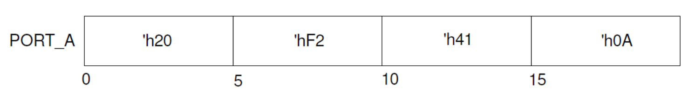
lab7_1_1.v
module tb_port_a;
// Port A is an 8-bit register for this example
reg [7:0] PORT_A;
initial begin
// Initial block to simulate waveform for PORT_A
PORT_A = 8'h20; // At time = 0ns, PORT_A = 'h20
#5 PORT_A = 8'hF2; // At time = 5ns, PORT_A = 'hF2
#5 PORT_A = 8'h41; // At time = 10ns, PORT_A = 'h41
#5 PORT_A = 8'h0A; // At time = 15ns, PORT_A = 'h0A
#5; // Wait for five ns to observe the last value in the simulation
end
// Monitor changes to PORT_A and display time and value
initial begin
$monitor("Time: %0t ns, PORT_A: %h", $time, PORT_A);
end
endmodule
We can run a Simulation to check the code by clicking the Run Simulation under the SIMULATION and choosing the first Run Behavioral Simulation.
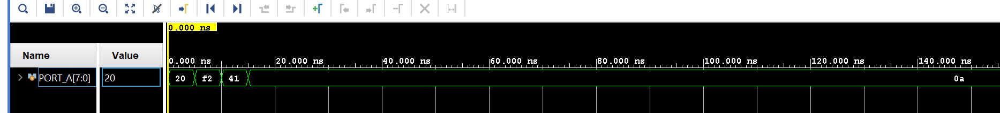
Part7-1-2
The “=” assignment operator in procedural assignment statements are used as a blocking procedural assignment. As the name indicates, the subsequent statement is blocked until the current assignment is done. Here is an example that explains the concept:
always @(A or B or CIN)
begin
reg T1, T2, T3;
T1 = A & B;
T2 = B & CIN;
T3 = A & CIN;
end
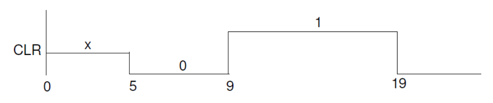
Another kind of assignment operator, where the assignment operator “<=” is used, is called non-blocking. The statement that uses the non-blocking operator does not block the execution; however, the assignment is scheduled to occur in the future. When the non-blocking assignment is executed, the right-hand side expression is evaluated at that time. Its value is scheduled to be assigned to the left-hand side target and the execution continues with the next statement. The non-blocking statements are widely used for content transfer across multiple registers (often in parallel) when a desired clock event occurs
always @(posedge CLK)
begin
T1 <= #5 A & B;
T2 <= #8 B & CIN;
T3 <= #2 A & CIN;
end
In this example, when the positive edge event on the CLK occurs, A, B, and CIN values are noted (captured). Then T1 gets an updated value after a 5-time units delay, T2 gets updated after an 8-time units delay, and T3 gets updated after a 2-time units delay all after the same rising edge of the CLK signal. Here is another example that generates the output shown in the waveform diagram.
initial
begin
CLR <= #5 1;
CLR <= #4 0;
CLR <= #10 0;
end
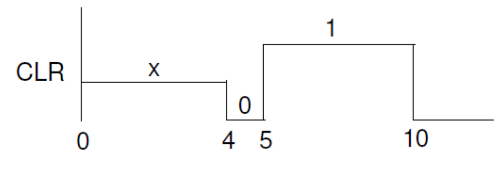
Write a testbench using intra-statement delays to produce the following waveform.
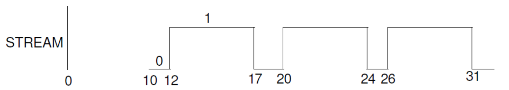
lab7_1_2.v
module stream_waveform_tb;
// Signal declaration
reg STREAM;
// Testbench initial block
initial begin
// Initial signal value
STREAM = #10 0;
// First toggle
STREAM = #2 1;
// First toggle back to 0
STREAM =#5 0;
// Second toggle to 1
STREAM =#3 1;
// Second toggle back to 0
STREAM =#4 0;
// Third toggle to 1
STREAM =#2 1;
// Third toggle back to 0
STREAM =#5 0;
STREAM =#3 1;
// End of simulation
$finish;
end
endmodule
We can run a Simulation to check the code by clicking the Run Simulation under the SIMULATION and choosing the first Run Behavioral Simulation.
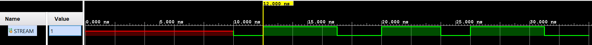
Part7-1-3
So far we have seen constructs that allow generation of stimulus unconditionally. However, many times we like to have different stimulus generation upon certain conditions. Verilog HDL provides control altering statements such as if, if … else, and if … else if. The general syntax of an if statement is:
if (condition-1)
procedural_statement
[ else if (condition-2)
procedural_statement ]
[ else
procedural_statement ]
If the procedural_statement above consists of more than one statement then they are enclosed between a begin…end block.
It is possible to have nested if statements. In such case, the else part is associated to the closest if part. For example, below, the else part is associated to the if (RESET) condition,
if (CLK)
if (RESET)
Q <= 0;
else
Q <= D;
The if statement is commonly used to create a priority structure, giving higher priority to the condition listed first.
Write a behavioral model to design a 1-bit 4-to-1 mux using the if-else-if statement. Develop a testbench to verify the design.
lab7_1_3.v
module mux4to1 (
input wire [3:0] in, // 4 1-bit inputs
input wire [1:0] sel, // 2-bit select input
output reg out // 1-bit output
);
// Behavioral modeling using if-else-if
always @ (in or sel) begin
if (sel == 2'b00) begin
out = in[0]; // Select input 0
end
else if (sel == 2'b01) begin
out = in[1]; // Select input 1
end
else if (sel == 2'b10) begin
out = in[2]; // Select input 2
end
// else if (sel == 2'b11) begin
else begin
out = in[3]; // Select input 3
end
end
endmodule
Now we can see the Schematic under the RTL ANALYSIS part like below. Without the else statement, the synthetic circuit is more complicated. Because if Verilog does not have an else statement, it will have an extra flip-flop/register like below:
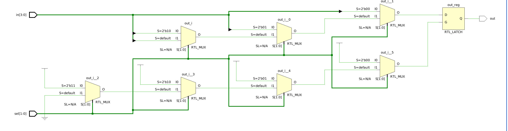
With the else statement:
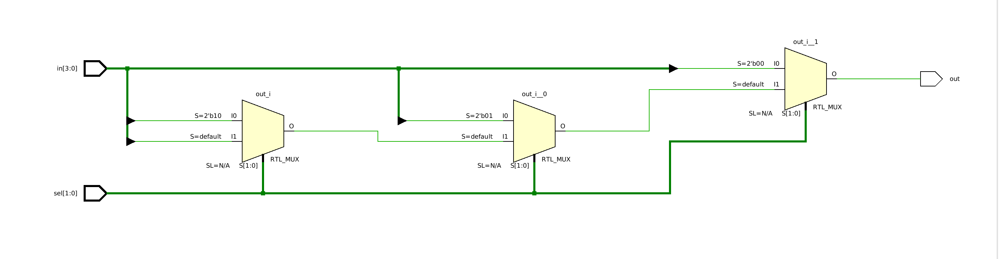
tb.v
module tb_mux4to1;
// Testbench signals
reg [3:0] in;
reg [1:0] sel;
wire out;
// Instantiate the 4-to-1 Mux
mux4to1 uut (
.in(in),
.sel(sel),
.out(out)
);
// Test sequences
initial begin
// Test Case 1
in = 4'b1010; sel = 2'b00; #10;
// Test Case 2
in = 4'b1010; sel = 2'b01; #10;
// Test Case 3
in = 4'b1010; sel = 2'b10; #10;
// Test Case 4
in = 4'b1010; sel = 2'b11; #10;
// Complete the simulation
$finish;
end
// Monitor changes
initial begin
$monitor("Time=%t | in=%b, sel=%b, out=%b", $time, in, sel, out);
end
endmodule
We can run a Simulation to check the code by clicking the Run Simulation under the SIMULATION and choosing the first Run Behavioral Simulation.
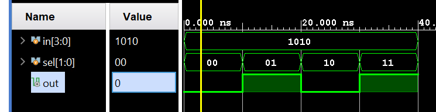
Part7-1-4
Another widely used statement is a case statement. The case statement is generally used when we want to create a parallel structure (unlike priority). The case statements are commonly used in creating the finite state machine. The syntax of the case statement is:
case [ case_expression]
case_item_expr [, case_item_expression] : procedural_statement
....
....
[ default: procedural_statement ]
endcase
The case_expression is evaluated first (whenever there is an event on it), and the value is matched with the case_item_expr in the order they are listed. When the match occurs, the corresponding procedural_statement is executed. The procedural_statement, if it consists of multiple statements, is enclosed in a begin … end block. The default case covers all values that are not covered by any of the case_item_expr. In the case_expression, the x and z (if present) are compared literally in case_item_expr. That is they are not considered don’t case. If you want to consider them as don’t care then you can use casex or casez statement instead of the case. In the casez statement, the value z that appears in the case_expression and case_item_expr is considered as don’t care. In the casex statement, both the values x and z are considered as don’t care
Design a gray code generator using the case statement.
lab7_1_4.v
module gray_code_generator (
input wire [3:0] binary, // 4-bit binary input
output reg [3:0] gray // 4-bit Gray code output
);
// Convert binary to Gray code using a case statement
always @(binary) begin
case (binary)
4'b0000: gray = 4'b0000;
4'b0001: gray = 4'b0001;
4'b0010: gray = 4'b0011;
4'b0011: gray = 4'b0010;
4'b0100: gray = 4'b0110;
4'b0101: gray = 4'b0111;
4'b0110: gray = 4'b0101;
4'b0111: gray = 4'b0100;
4'b1000: gray = 4'b1100;
4'b1001: gray = 4'b1101;
4'b1010: gray = 4'b1111;
4'b1011: gray = 4'b1110;
4'b1100: gray = 4'b1010;
4'b1101: gray = 4'b1011;
4'b1110: gray = 4'b1001;
4'b1111: gray = 4'b1000;
default: gray = 4'b0000; // Default case
endcase
end
endmodule
Part7-1-5
Verilog HDL also supports various loop statements to do the same function a number of times. The supported loop statements are:
forever loop
repeat loop
while loop
for loop
The forever loop statement is used when the procedural statement(s) need to be executed continuously. Some kind of timing control must be used within the procedural statement if a periodic output is desired. For example, to generate a clock of 20 units period, the following code can be used.
initial
begin
CLK = 0;
forever
#10 CLK = ~CLK;
end
The repeat loop statement is used when the procedural statement(s) need to be executed a specified number of times. Note: if the loop count expression is an x or a z, then the loop count is treated as a 0.
repeat (COUNT)
SUM = SUM +5;
The while loop statement’s procedural statement(s) are executed until certain conditions become false.
while (COUNT < COUNT_LIMIT)
SUM = SUM +5;
The for loop statement is used when the procedural statement(s) need to be executed a specified number of times. Unlike the repeat statement, an index variable is used which can be initialized to any desired value, it can be further updated by whatever value is required, and a condition can be given to terminate the loop statement. The loop index variable is normally defined as an integer type. Here is an example of the loop statement.
integer K;
for (K=0; K < COUNT_LIMIT; K = K+1)
SUM = SUM + K;
Write a model of a counter which counts in the sequence mentioned below. The counter should use behavioral modeling and a case statement. Develop a testbench to test it. The testbench should display the counter output in the simulator console output. Simulate using the clock period of 10 units for 200 ns. 000, 001, 011, 101, 111, 010, (repeat 000).
set_property CLOCK_DEDICATED_ROUTE FALSE [get_nets { clk }];
lab7_1_5.v
module sequence_counter(
input clk,
input reset,
output reg [2:0] out
);
localparam S0 = 3'b000, // State definitions for readability.
S1 = 3'b001,
S2 = 3'b011,
S3 = 3'b101,
S4 = 3'b111,
S5 = 3'b010;
// Current and next state variables
reg [2:0] current_state, next_state;
// State transition logic
always @(posedge clk or posedge reset) begin
if (reset) current_state <= S0;
else current_state <= next_state;
end
// Next state logic based on the case statement
always @(*) begin
case (current_state)
S0: next_state = S1;
S1: next_state = S2;
S2: next_state = S3;
S3: next_state = S4;
S4: next_state = S5;
S5: next_state = S0;
default: next_state = S0;
endcase
end
// Output logic
always @(current_state) begin
out = current_state;
end
endmodule
tb.v
module tb_sequence_counter;
// Testbench signals
reg clk = 0;
reg reset = 1;
wire [2:0] out;
// Instantiate the counter
sequence_counter uut (
.clk(clk),
.reset(reset),
.out(out)
);
// Clock generation
always #5 clk = ~clk; // 10 units clock period
// Test sequence
initial begin
// Initialize
$display("Time\tOutput");
$monitor("%g\t%b", $time, out);
// Reset
#10 reset = 0; // Release reset after 10 ns
#200 $finish; // Simulate for 200 ns
end
endmodule
We can run a Simulation to check the code by clicking the Run Simulation under the SIMULATION and choosing the first Run Behavioral Simulation.
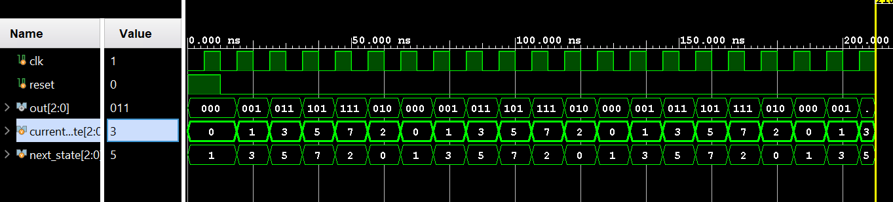
Timing Constraints
In combinatorial logic design, delays through the circuits will depend on the number of logic levels, the fan-out (number of gate inputs a net drives) on each net, and the capacitive loading on the output nets. When such circuits are placed between flip-flops or registers, they affect the clock speeds at which sequential designs can be operated. The synthesis and implementation tools will pack the design in LUT, flip-flops, and registers and place them appropriately if the expected performance is communicated to them via timing constraints. Timing constraints can be categorized into global timing or path-specific constraints. The path-specific constraints have higher priority than global timing constraints, and the components used in those specific paths are placed and routed first.
The global timing constraints cover most of the design with very few lines of instructions. In any pure combinatorial design, the path-to-path constraint describes the delay the circuit can tolerate. Period, input delay, and output delay constraints are used in sequential circuits. All four kinds of timing constraints are shown in the figure below.
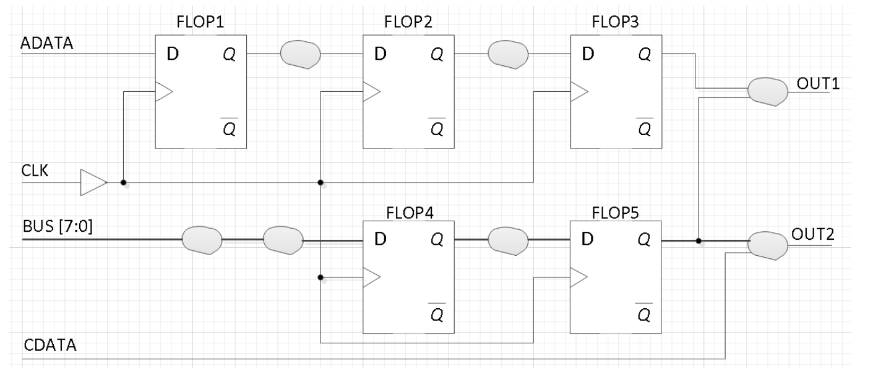
In the above figure, the paths covered between ADATA input and D port of FLOP1, BUS input and D port of FLOP4 can be constrained by a constraint called SET_INPUT_DELAY command. The set_input_delay command indicates how much time is spent between the Q output of an FF in the upstream device, the routing delay in the upstream device, and the board delay. The tools will subtract that delay from the clock period of the clock signal listed in the command and will use the resulting delay to place and route the path between the input and the D input of FF. It will also consider the delay experienced by the clock arriving at the clock port of the destination FF (e.g. FLOP1 in the above diagram). The max and min qualifiers are used for the setup and hold checks.
The paths between the port Q of FLOP3 and output OUT1, Q port of FLOP5 and OUT1, Q port of FLOP5 and OUT2 can be constrained by SET_OUTPUT_DELAY command. Again, the delay mentioned indicates how much is spent on the board delay, routing delay and the setup delay of the FF in the downstream device.
The paths between CDATA and OUT2 can be constrained by the SET_MAX_DELAY constraint.
The paths between the Q port of FLOP1 and D port of FLOP2, Q port of FLOP2 and D port of FLOP3, Q port of FLOP4 and D port of FLOP5 can be constrained by the period constraint. The period constraint is created using the create_clock command. The create_clock command may refer to a pin of the FPGA design or may not refer to any pins. A virtual clock will be created when the clock pin is not referred to. When the pin is referred to, the period parameter indicates rising to rising edge delay, and the waveform option indicates when the rising edge occurs. The second number indicates when the falling edge occurs. The waveform option can create clocks of a non-50% duty cycle and/or phase-delayed clock signal.
create_clock -name CLK -period 10.0 -waveform (0 5.0) [get_ports CLK]
set_input_delay -clock CLK -max 3.0 [all_inputs]
set_input_delay -clock CLK -min 1.0 [all_inputs]
set_output_delay -clock CLK 2.0 [all_outputs]
set_max_delay 5.0 -from [get_ports CDATA] -to [get_ports OUT2]
Note that the clock period is defined at 10 ns. This is applied throughout the example for consistency. Further details on the syntax of each constraint type can be found in UG903, the Vivado Using Constraints Guide.
Conclusion
In this lab, you learned about various constructs that are available in behavioral modeling. You also learned about blocking and non-blocking operators, concepts, and the need for timing constraints. Providing the timing constraints to the implementation tools, the generated output can be made to meet the design’s timing specifications.